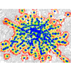

The maps presented here aren't meant to be authoritative and are probably full of errors. They're merely an attempt to extract this sort of information from OSM. The program (for Linux, written in C) is available here.
| Buenos Aires
Detailed view gnuplot data set The subway system is complemented by regional trains (not shown) that mainly connect the surrounding metropolitan area but also have some stops inside the city. A vast network of bus services duplicates and complements the subway, providing service to the many areas the subway doesn't reach. A tramway line ("premetero", not shown) covers some of the southwestern corner. Note that the map shows a few stations that are not yet in service. | |
| London
Detailed view gnuplot data set Not entirely sure if all the stops OSM shows truly correspond to subway stations. Some seem too far out. | |
| Madrid
Detailed view gnuplot data set Are the outliers for real ? | |
| New York
Detailed view gnuplot data set I don't know that city. Is the map even remotely accurate ? The outliers seem weird. | |
|  | Paris
Detailed view gnuplot data set Subway coverage looks nearly perfect. Anything to add ? |
| Vienna
Detailed view gnuplot data set Vienna has tramways and urban trains to complement the subway system. |
The color-coding is as follows: green is for walking distances up
to 333 m, which corresponds to about 5 minutes of walking (not
counting waits for red lights, congested sidewalks, etc.) A walking
time of 5 minutes or less is generally considered excellent.
Yellow is for walking times between 5 and 10 minutes. This is still
convenient for most people.
Red is for a time between 10 and 15 minutes. While still tolerable,
having to walk for so long may become an effort, especially in a
crowded or otherwise unattractive zone.
Anything beyond 15 minutes (1 kilometer) is considered to be
unacceptable for the
majority of passengers (although some may actually enjoy a long
walk) and would drive many to seek other means of transportation,
be it in the form of a replacement of the subway service or in
the form of a complementary service to reach a subway station.
Note: these figures are based on the meta-study
"Planning Commission TOD Committee, Walking Distance Research".
For comments, please go to the subosm project Wiki or send mail to werner@almesberger.net
Last update: 2013-07-15
{kind=link}
{kind=link}
{kind=link}
{kind=link}
{kind=link}
{kind=link}